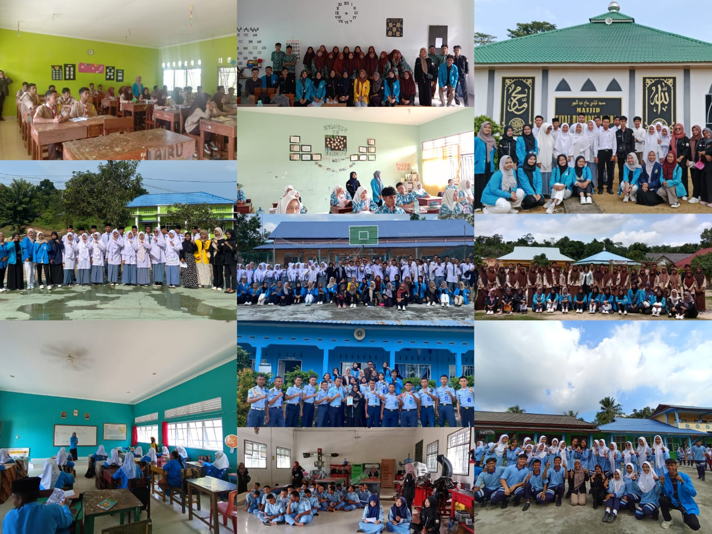

HIMK Tanjungpinang-Bintan Laksanakan Sosialisasi Perguruan Tinggi, Jalur Masuk Dan Beasiswa Di Pulau Kundur, Kabupaten Karimun

Himpunan Mahasiswa Kundur (HIMK) Tanjungpinang-Bintan Periode 2023-2024 telah melaksanakan kegiatan sosialisasi pengenalan Perguruan Tinggi Negeri, Perguruan Tinggi Swasta, Jalur masuk kuliah serta Beasiswa. Kegiatan sosialisasi ini ditujukan bagi para siswa/I SMA/SMK/MA yang ada di Pulau Kundur, terutama bagi mereka yang ingin melanjutkan Pendidikan di PTN atau PTS yang ada di Tanjungpinang-Bintan. Pada kegiatan sosialisasi ke - 12 HIMK mengusung tema “Merajut Asa Menggapai Cita” yang berarti kegiatan ini menjadi upaya dalam mewujudkan harapan serta dorongan penuh semangat kepada calon mahasiswa untuk meraih cita-cita yang mereka inginkan. Kegiatan ini berlangsung selama enam hari, mulai dari hari Senin, 29 Januari 2024 hingga hari Sabtu, 03 Februari 2024, dengan sasaran kegiatan sosialisasi ini yakni siswa/I kelas 12 yang ada di SMA/SMK/ MA yang ada di Pulau Kundur.
Ketua panitia Agung Catur Saputra, Mengatakan, Saya merasa senang dan bangga kegiatan ini dapat diselenggarakan dengan lancar. Saya juga melihat para siswa siswi apa lagi yang ingin melanjutkan kuliah di Tanjungpinang-Bintan sangat berantusias untuk mengikuti sosialisasi ini. Hal ini menunjukkan bahwa minat untuk melanjutkan pendidikan ke PTN dan PTS masih sangat tinggi. "Siswa/I yang mengikuti kegiatan sosialisasi ini sangat berantusias dalam mengajukan pertanyaan demi pertanyaan kepada rekan Himpunan Mahasiswa Kundur (HIMK) Tanjungpinang-Bintan. Pertanyaan tersebut didominasi mulai dari jalur masuk kampus Negeri atau Swasta yang ada di Tanjungpinang-Bintan, hingga pertanyaan mengenai beasiswa yang selalu menjadi pembahasan utama pada setiap sekolah yang dikunjungi, " Jelas Agung. Permasalahan utama dalam melanjutkan pendidikan ke perguruan tinggi ialah masalah Ekonomi yang hampir saja meredupkan tekad dan semangat dari para calon mahasiswa. Sebelumnya, sebagian dari mereka hanya tau terkait informasi beasiswa namun merasa tidak akan bisa menggapainya karena menganggap persyaratan beasiswa hanya terpaku pada nilai raport semata. "Namun dengan dipaparkannya pengenalan beasiswa dari jenis hingga persyaratannya, siswa/I kembali memiliki semangat dan bahkan bersedia mempersiapkan diri mulai dari sekarang untuk menghadapi seleksi demi seleksi yang nantinya akan mereka hadapi," Tutup Agung.
 Sementara itu Ketua Umum HIMK Tanjungpinang-Bintan M. Teo Renaldi mengatakan, Sosialisasi terkait Perguruan Tinggi Negeri maupun Swasta, jalur masuk dan beasiswa ini sudah menjadi agenda tahunan oleh himpunan mahasiswa kundur. Kegiatan ini di gagas untuk memberikan informasi tentang kehidupan kampus atau bagaimana menjadi seorang mahasiswa di Tanjungpinang-bintan secara khusus dan secara umum untuk di Indonesia kepada siswa-siswi SMA, SMK, MAS dan pondok pesantren di Tanjungbatu dan sekitarnya. Kegiatan sosialisasi ini sudah termasuk kegiatan yg ke 12 kalinya. Untuk itu pasti ada harapan atau tujuan terselenggaranya kegiatan ini secara khusus untuk merangkul siswa-siswi yg ada di tanjungbatu dan sekitarnya untuk terus melanjutkan pendidikannya serta sebagai prasarana pembelajaran bagi mahasiswa kundur sendiri berproses di kampung halamannya.
"Saya memberikan apresiasi sepenuhnya dan ucapan terima kasih kepada anggota HIMK yang telah mendedikasikan diri nya untuk melaksanakan kegiatan ini, Meskipun ada beberapa kendala di lapangan namun itu semua tak membuat tema-teman patah semangat dalam menjalankan dan mensukseskan kegiatan sosialisasi ini hingga selesai, " Tutup Teo
Penulis : Dea Ayu Putri